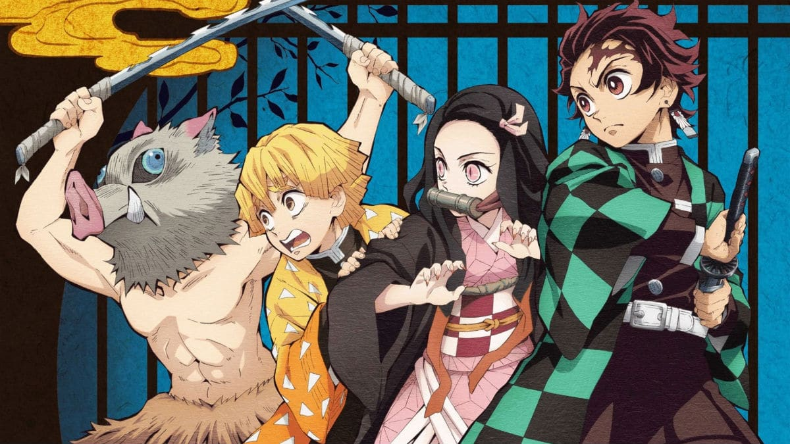

Anime
Demon Slayer
PERSONAGGI:
- Tanjiro
- Zenitsu
- Inosuke
- Nezuko
Descrizione storia e personaggi:
Tanjiro,un ragazzo determinato con sua sorella Nezuko diventata un demone che però resiste alla tentazione del sangue. Zenitsu un ragazzo che all'apparenza fifone, ma in realtà è l'esatto contrario. Infine Inosuke con il copricapo da cinghiale, che pensa di essere molto figo e si butta sempre a capofitto in ogni occasione. Da qui inizierà il loro viaggio,cosa succederà?
Anime
Hanako-kun e i sette misteri dell'accademia Kamone

PERSONAGGI:
- Hanako
- Nene Yashiro
- Kou Minato
- Mitsuba
Descrizione storia e personaggi:
Yashiro una ragazza che desidera essere ricambiata dal prorprio amore per Minamoto-senpai, nei corridori gira voce del settimo mistero, nel terzo bagno che può esaudire un desiderio in cambio di qualcosa. Yashiro allora va nel bagno e bussa alla porta del terzo bagno,cosa succederà?Hanako è solo una leggenda metropolitana o esiste veramente?